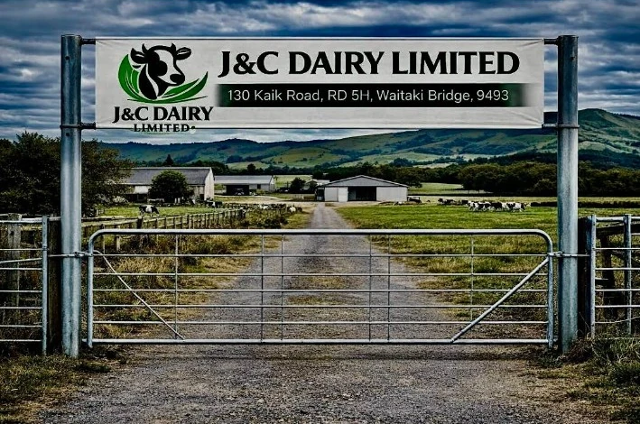
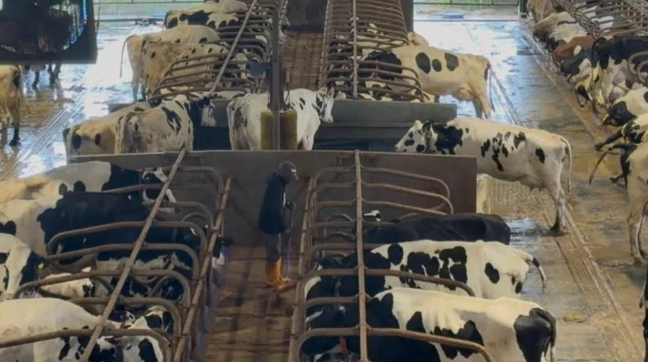
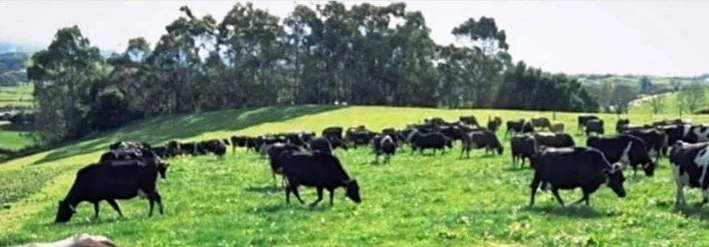

Honest, quality milk
Clean sheds, good records and straight answers. If you ask how we do something, we'll tell you.
J&C Dairy is a dairy farm in the South Island of New Zealand. We look after our cows, our land and our people, and we do it properly, every single day.

How we work
Clean sheds, good records and straight answers. If you ask how we do something, we'll tell you.
Healthy grass, clean water and careful use of the farm, so it stays productive for the next generation.
Fair treatment, safe work and clear communication. A farm only runs as well as the people on it.

About us
J&C Dairy Limited is a dairy farming business at Waitaki Bridge, in New Zealand's South Island. Every day starts early: the cows are milked, fed and checked, and the milk is handled with care from the shed onwards.
Behind the cows is a small team who handle the daily farm work, the paperwork, and looking after staff. We keep it simple: do the job well, keep proper records, and treat animals and people fairly.
Meet the people
From the owner to the milking shed, everyone has a part to play. Here is who does what.
Where we're heading
We want to keep producing fresh, good-quality milk while looking after the land and the people who work it, so the farm is still going strong for years to come.

Get in touch
Want to work with us, apply for a job, or just ask a question? Send a message and someone from the team will reply as soon as they can.
Visit us130 Kaki Road, RD 54
Waitaki Bridge 9493
Emailinfo@jcdairy.co.nz
Phone+64 9 801 1606
Hours9:00 am – 5:00 pm